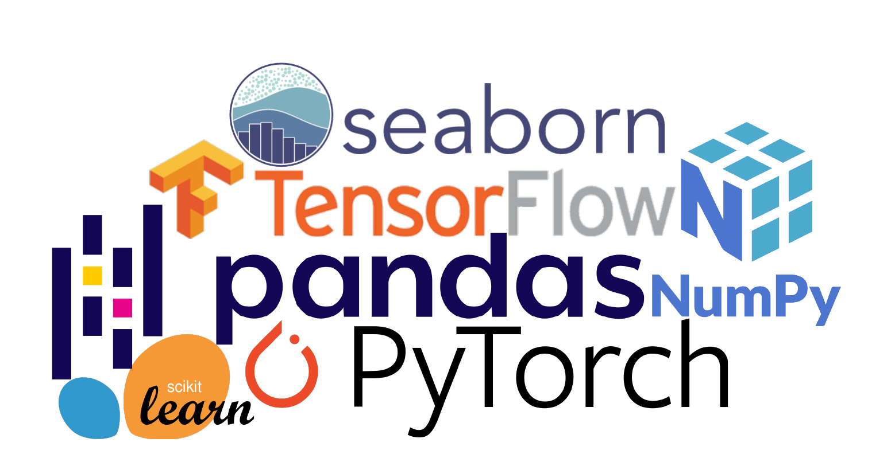
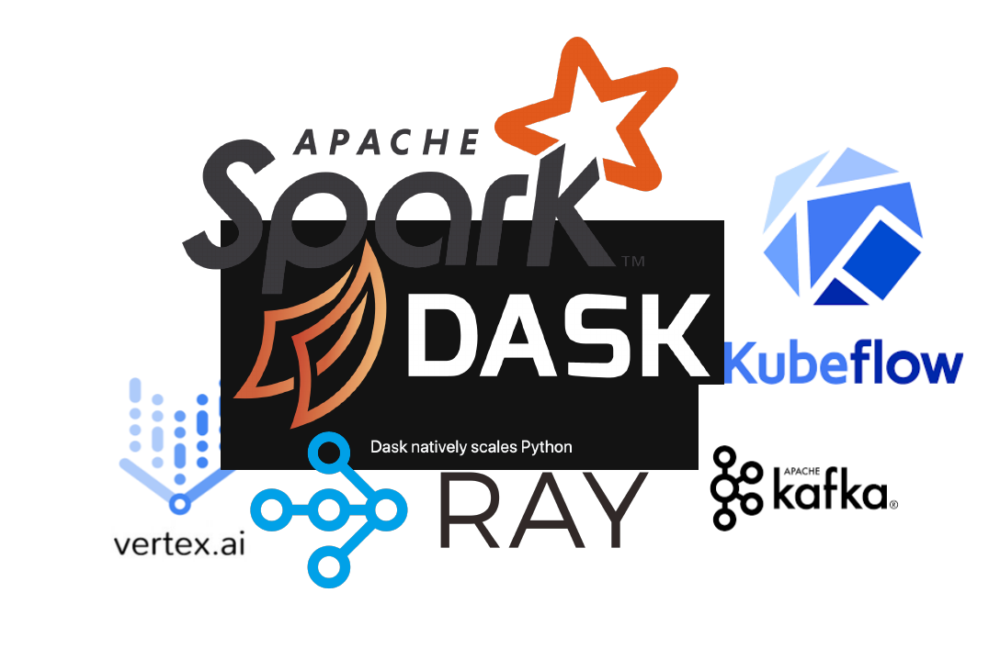
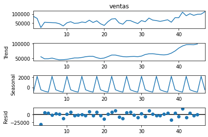
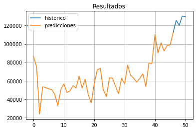
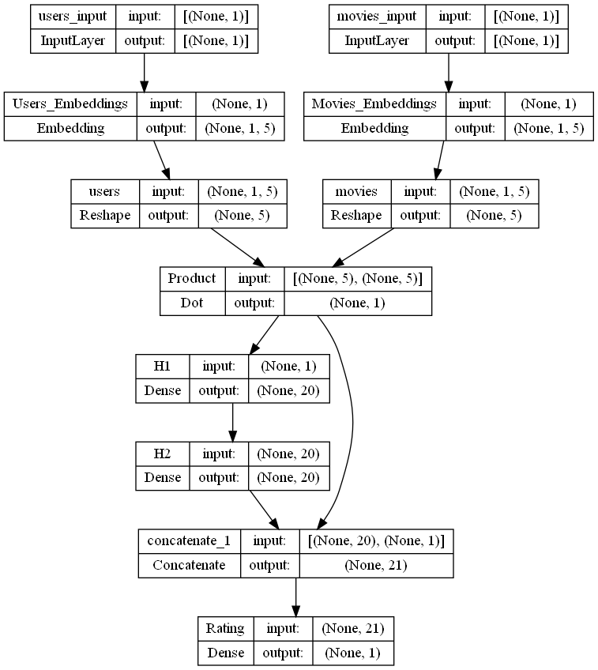
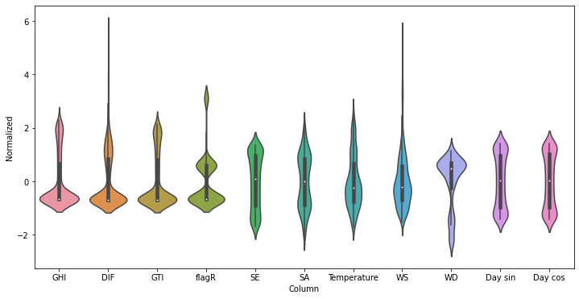
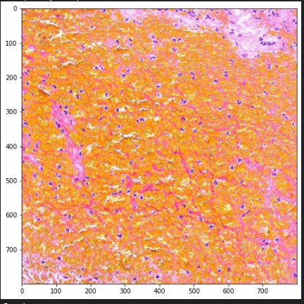
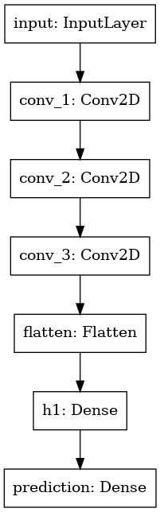

Introduction
I use Python as my main language for almost all of the worflows I have.
However, I also use R to perform data exploration (EDA) and also to create
visualistaions and plots for presentations.
Main skillset

I have extensive experience in the design,
testing and deployment of predictive models.
I got this experience by participating in Kaggle competitions,
learning with Google Brain training material, among others.
Everything I learned allowed me to carry out different projects
and jobs for companies and individuals, giving me an accumulated experience
of 3 years in the field.
I use Jupyter Notebooks in order to design
and testing the base model, as well as designing a
prototype of the data pipelines.
I usually work on 2 platforms for this: VertexAI
from Google Cloud and cloud9 from AWS.
Big Data Tools and Environments

Most of the times, the data I work with consists of several Thousands of Gigabytes (TB).
Specially when training the model. This data needs to be processed in order to be used as
training set. For Big Data I use the following technologies and packages.
You can check out my work here
My work
For the previous works I have used keras,
a high-level layer to design both the architecture
of the model as well as the preprocessing layer and the creation of features. I also use XGBoost-based models all the time, from classifiers to regressors. However. my main forte is Deep Learning.
Here are some models I designed for my projects and past jobs.
Sales Forecasting
My task was to design a predictive model of sales by product of a retail chain.
The dataset consists of the history of sales by product, region, category and others.
This case consists of temporary (historical) data, so I designed a pipeline to normalize and deseasonalize the data.
Seasonal decompose of the weekly sales.

The final predictions are shown below.

Movie Recommendation System
Source Code
In this project I designed a Deep Learning approach to movies recommendation on pair with the user-movies sparse matrix
The goal is to show a ranking of the movies for each user with the highest predicted ratings (predictions made by the model).
The arquitecture of the final model is shown below:

This is one of the most interesting models I have done.
In order to achieve my performance goal, I had to deal with inmense sparse matrix:
The average user watches no more than 50 movies normally, however there are milllios of movies. Some of them
with billions of views, whereas others with mere thousands. With feature engineering and data wrangling (including densing the inputs) my model
achieved great results. And currently is pipelined to be deployed on a web-based app.
Weather Forecasting for Peruvian Amazon
Source Code
Together with other students from my university,
we designed an end-to-end machine learning solution to provide
forecasting services for meteorological phenomena in Amazonian towns.
The following model predicts the temperature.
Besides this one, we design models to predict radiation,
precipitation and wind speed vector.
Normalized feature columns

Model testing

Instead of using an ARIMA model I proposed a supervised approach
and designed a neural network architecture. This implied doing
more feature engineering (which I love), like encoding the datetime variable into a
periodic funciton, finding the best number of lags, etc.
Stroke blood Cloth Image Classfication
This model is made in order to classify the blood clots origins in ischemic stroke
between two acute ischemic stroke subtypes: cardiatic and large artery atherosclerosis.
The dataset consists of hundreds of full slide pictures of the blood clots. Some of them are files in the order of the
gigabytes. Thus, the preprocessing layer has to be efficient and able to find the optimal region where the blood is present.
The pipeline scans the full image (from the left) and finds a region that contains a considerable
ammount of blood.

Arquitecture of model: Convolutional Neural Network with dense output.

My contact info is over here
Contact
Currently I am open to job offers both full and part time, and my disponibility is inmmediate.
However I would prefeer a full time - full remote position.
I would be more than happy if you request more information about my work.
Also, schedule a virtual interview to discuss my past and current projects, experience and skills would be amazing!
Social Media
These are kaggle and github accounts:
If you prefeer, you can text me at my phone to schedule a call or whatsapp me, my phone number is the following.
(+51) 989-312-330Phone